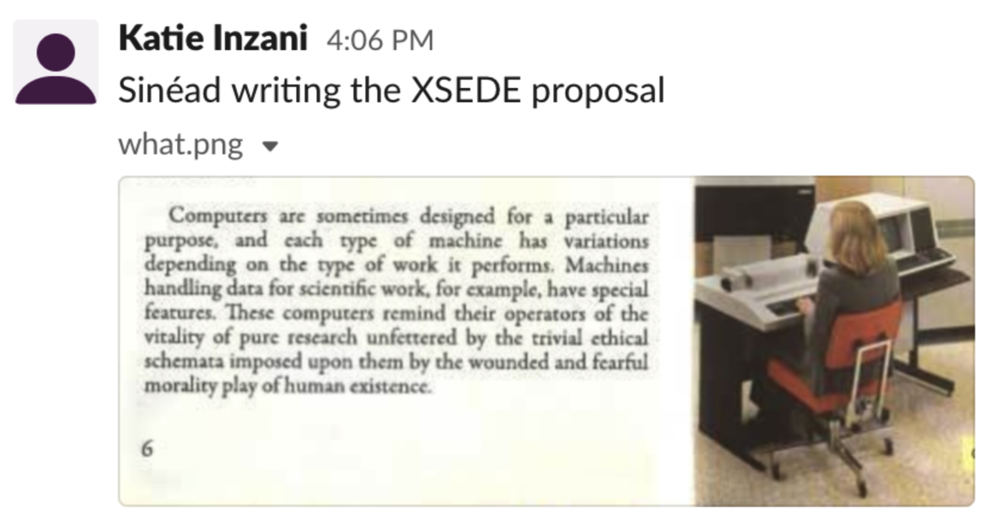

Guide to Remote Work¶
Here is our collaboratively written guide to working virtually in the Griffin Group during recommended telecommuting beginning March 2020. It takes into considerationboth the personal preferences of group members and the interests of the group following a group discussion.
Day-to-Day¶
We note that everyone works differently with various wishes for daily feedback from other group members and Sinéad. However, we agree that to maintain cohesion in the group we would all commit to the following:
Keep some presence on Slack throughout the day (be available or responsive for at least an hour or two every day during normal work hours). If you’re very busy or working on a deadline, just mention that
Post your work-in-progress, or a plot you’re working on, or some weird results (especially if you have realized you have made a mistake!) in the #nanoupdates channel or relevant slack channels.
Collaborative Meetings, Meetings with Sinéad, and Group Meeting¶
Group meeting with Liang’s group will continue as scheduled on Friday at 11 AM, however over Zoom. Please ensure that your presentation is fully ‘zoom-compatible’, i.e. you don’t require a whiteboard or blackboard.
Collaborative meetings will be scheduled on an as-needed basis. For projects with more than two group members, a slack channel will be used for informal discussions.
Everyone will continue with their pre-arranged 1-on-1 meetings with Sinéad over Zoom.
Users we frequently interact with (e.g., Amy, Paul) are welcome to join any of the virtual workplaces or meetings.
Group Health¶
Everyone will keep connected on a day-to-day basis over email/slack both to discuss science and check-in on each other
We will have a weekly (for now) ‘stand-up’ 10 mins on Zoom to replace informal in-person interactions. Currently scheduled for 11am Monday.
Everyone’s individual situation is different, so we all agree to be respectful, kind and understanding during this uncertain time.
Sinéad is available for any concerns you have, whether that be directly related to your productivity during this time, or helping with any other issues that come up.
We will all do better to post in #random; PI-related memes are particularly encouraged
